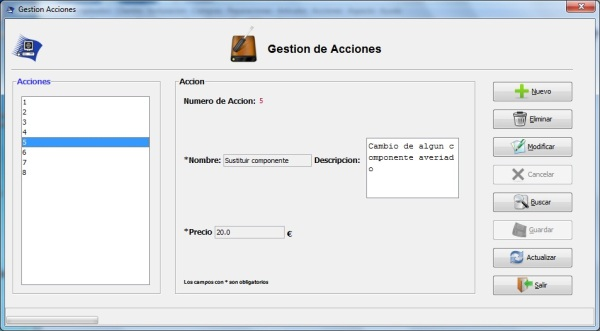

Gestion de Acciones
Gestion de Acciones
Desde el menu gestion de Acciones se gestionaran las acciones de reparacion del sistema. Las acciones de reparacion son las acciones que se hacen sobre una reparacion(sustituir algun componente, instalar un programa, etc.).
Se podra dar de alta,baja,editar y buscar acciones. Cuenta tambien con la opcion de guardar y deshacer los cambies hechos en las acciones
Imagen del menu Gestion de Acciones.

Las opciones del menu gestion de Acciones son:
- Nuevo : para dar de alta una nueva accion.
- Eliminar : Para eliminar una accion.
- Modificar : Para editar una accion.
- Cancelar : este boton se habilita despues de un alta o una modificacion y sireve para cancelar un alta o modificacion
- Buscar: Para buscar una accion por su numero de accion
- Guardar : para guardar los cambios realizados
- Actualizar : deshace todos los cambios sin guardar y actualiza la lista de acciones con los datos de la base de datos
- Salir : Cierra el menu de gestion de acciones